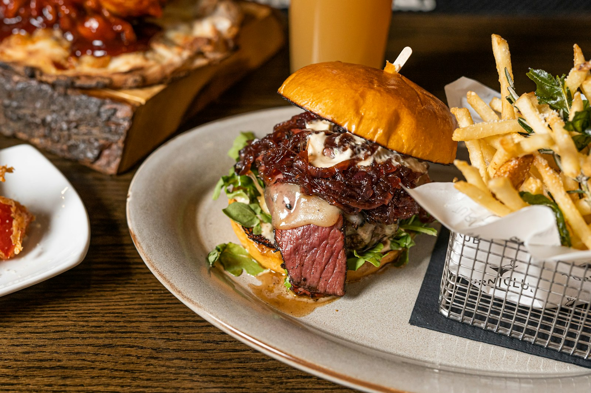

9.000+
reseñas para salir esta noche
After, cerveza
y mesa larga.
Un lugar de noche para caer con ganas: cerveza, comida y porciones que se hacen notar.
4,3 ★ · 9.393 reseñasUna noche, tres razones
La barra, la cocina
y el plan de caer.
- CervezaLas reseñas hablan de cerveza y una salida para repetir.
- Para picarUna mesa con cosas ricas para compartir aparece entre las recomendaciones.
- Hasta tardeViernes y sábados, de 6:30 p. m. a 4:00 a. m.
De quienes ya hicieron la previa
“Real good place, great beer and not expensive at all... Dish sizes are huge! A must in BA night”Alfredo Etchamendi
“Chilled vibe, friendly service and awesome food/beer.”Gabriel Machado
¿Caés hoy?
Guardá la dirección, revisá el horario y seguí el perfil oficial. No hay teléfono publicado: estas son las dos vías directas para decidir la salida.
- Lunes a jueves
- 6:30 p. m. – 2:00 a. m.
- Viernes y sábado
- 6:30 p. m. – 4:00 a. m.
- Domingo
- 6:30 p. m. – 12:00 a. m.
- Dirección
- GOA, Maestro Ángel D'Elía 1145, B1663 San Miguel.
Servicio de bar para armar el after.
Baum San Miguel es un bar en Maestro Ángel D'Elía 1145. Las reseñas hablan de cerveza, comida, porciones grandes y una salida nocturna relajada. La valoración publicada es 4,3 sobre 5 a partir de 9.393 reseñas: una señal de confianza para clientes que buscan dónde caer.
No hay teléfono publicado. Por eso el contacto está resuelto por dos canales verificados: podés consultar por Instagram o abrir Maps para llegar. Fabian Sierra (RED) cuenta que el lugar puede tener fila si no reservás; consultar antes de ir ayuda a decidir la salida con tiempo.
Proceso para planear la noche
Primero consultás por Instagram. Después confirmás la dirección y el horario. Por último coordinás con tu grupo y abrís cómo llegar. Son pasos simples para pasar de la idea al contacto sin depender de un teléfono.
Galería de noche
Las fotos acompañan el clima de cerveza y cocina que describen los clientes. Gabriel Machado resumió: “Chilled vibe, friendly service and awesome food/beer.”
¿Querés reservar o consultar?
Escribí al perfil oficial para consultar por Instagram o usá Maps para llegar al bar.
Consultar por InstagramContactoLa atención que valoran los clientes se menciona junto con la cerveza y la comida. Para contacto, usá el Instagram oficial; para llegar, abrí Maps con la dirección publicada.